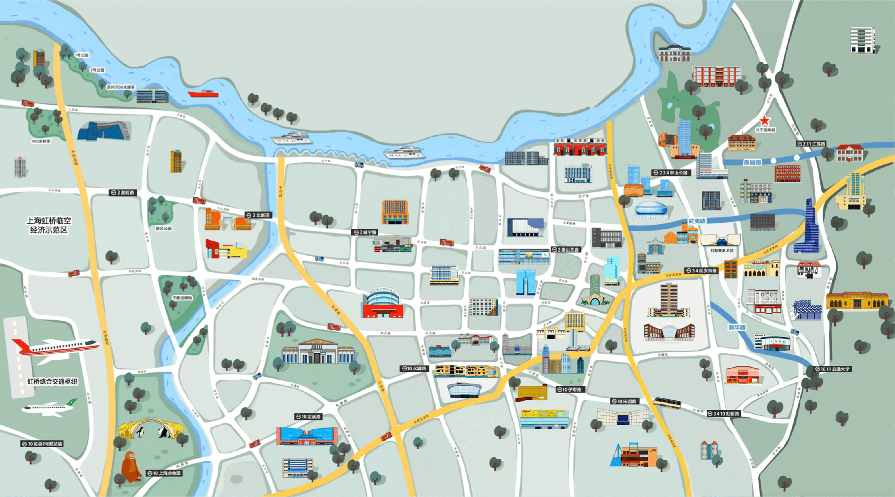
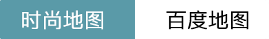
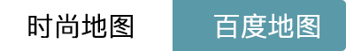

<!DOCTYPE html>
<html lang="en" ng-app="myapp">
  <head>
    <meta charset="UTF-8" />
    <meta
      name="viewport"
      content="width=device-width, initial-scale=1, maximum-scale=1, user-scalable=no"
    />
    <meta name="apple-mobile-web-app-capable" content="yes" />
    <meta http-equiv="X-UA-Compatible" content="ie=edge" />
    <title>长宁时尚地图</title>
    <link rel="stylesheet" href="./css/base.css" />
    <!-- <link rel="stylesheet" href="./ionic/css/ionic.min.css"> -->
    <link rel="stylesheet" href="./css/index.css" />
    <script src="./js/jquery.min.js "></script>
    <script src="./ionic/js/ionic.bundle.min.js "></script>
    <script
      type="text/javascript"
      src="http://api.map.baidu.com/api?key=&v=1.1&services=true"
    ></script>
  </head>

  <body ng-controller="myCtrl">
    <!-- 背景图片 -->

    <!-- 时尚地图 -->
    <!-- <div class="pinch container ">
        <div class="newcontainer">
            
            <div class="first">
                
            </div>
            <div class="second">
                
            </div>
            <div class="third">
                
            </div>
        </div>

    </div> -->

    <!-- 百度地图 -->
    <div id="dituContent"></div>

    <!-- 上方选择商圈 -->
    <!-- <div class="nav">
        <div class="nav_show">
            <div class="left" ng-bind="address" ng-click="openNavHide()">
            </div>
            <div class="right">
                
                
            </div>
        </div>
        <div class="nav_hide">
            <div class="left" ng-click="choiceObjFun(0)" style="color:#75AAB5">临空
            </div>
            <div class="left" ng-click="choiceObjFun(1)">新虹桥
            </div>
            <div class="left" ng-click="choiceObjFun(2)">中山
            </div>
        </div>
    </div> -->

    <!-- <div class="shoplist">
        <div class="choiceTop">
            <div class="busi" ng-click='goBusiness()'>
                
            </div>
            <form>
                <label>
                    <i>&nbsp;</i>
                    <input type="search" placeholder="&nbsp;&nbsp;点击搜索" ng-model="keyword" id="keyword">
                </label>
            </form>

        </div>
    </div> -->

    <!-- 下方选择地图 -->
    <!-- <div class="mapchoice">
        
        
    </div> -->
  </body>
  <!-- <script src="./js/pinch-zoom.umd.js "></script>

<script type="text/javascript">
    var el = document.querySelector('div.pinch');
    new PinchZoom.default(el, {});
</script> -->
  <script src="https://webapi.amap.com/maps?v=1.4.10&key=466fd4af47506ed3bdce5970ab4cb2a8&plugin=Map3D"></script>
  <script>
    // 创建地图实例
    var map = new AMap.Map('dituContent', {
      viewMode: '3D',
      pitch: 70,
      zoom: 17.5,
      center: [121.404058, 31.211158],
      mapStyle: 'amap://styles/normal',
      buildingAnimation: true,
      showIndoorMap: true,
      indoorMap: true,
      showBuildingBlock: true,
      rotation: 0,
    })

    // // 设置光照属性/
    map.AmbientLight = new AMap.Lights.AmbientLight([1, 1, 1], 0.9)
    map.DirectionLight = new AMap.Lights.DirectionLight(
      [0, -1, 1],
      [1, 1, 1],
      0.3
    )
    // // 创建Object3DLayer图层
    var object3Dlayer = new AMap.Object3DLayer()
    map.add(object3Dlayer)

    // 设置边界
    var prism = []
    var meshLine = []

    function drawBounds() {
      $.getJSON('map.json', function(resjson) {
        var boundobj = []
        for (var i = 0, l = resjson[0].length; i < l; i++) {
          //生成行政区划polygon
          var bound = new AMap.LngLat(resjson[0][i].P, resjson[0][i].O)
          boundobj.push(bound)
        }

        var height = 1000
        var color = 'rgba(100,255,255, 0.1)' //rgba
        prism = new AMap.Object3D.Prism({
          path: boundobj,
          height: height,
          color: color,
        })
        prism.transparent = true

        meshLine = new AMap.Object3D.MeshLine({
          path: boundobj,
          color: 'rgba(55,129,240, 0.9)',
          width: 5,
          height: 10,
        })
      })
    }
    drawBounds()

    // 添加模型
    map.plugin(['AMap.GltfLoader'], function() {
      var gltfObj = new AMap.GltfLoader()
      // 虹桥艺术中心
      var urlHqyszx = './gltf/hqyszx.gltf'
      var positionHqyszx = {
        position: new AMap.LngLat(121.404011, 31.211685),
        scale: 16,
        height: -13,
        scene: 0,
      }
      gltfObj.load(urlHqyszx, function(gltfCity) {
        gltfCity.setOption(positionHqyszx)
        gltfCity.rotateX(90)
        gltfCity.rotateY(0)
        gltfCity.rotateZ(0)
        object3Dlayer.add(gltfCity)
      })

      // 百盛优客
      var urlBsyk = './gltf/bsyk.gltf'
      var positionBsyk = {
        position: new AMap.LngLat(121.40326, 31.210697),
        scale: 70,
        height: 0,
        scene: 0,
      }
      gltfObj.load(urlBsyk, function(gltfCity) {
        gltfCity.setOption(positionBsyk)
        gltfCity.rotateX(90)
        gltfCity.rotateY(0)
        gltfCity.rotateZ(190)
        object3Dlayer.add(gltfCity)
      })

      // 汇金百货
      var urlHjbh = './gltf/hjbh.gltf'
      var positionHjbh = {
        position: new AMap.LngLat(121.405055, 31.211506),
        scale: 20,
        height: -20,
        scene: 0,
      }
      gltfObj.load(urlHjbh, function(gltfCity) {
        gltfCity.setOption(positionHjbh)
        gltfCity.rotateX(90)
        gltfCity.rotateY(0)
        gltfCity.rotateZ(10)
        object3Dlayer.add(gltfCity)
      })

      // 巴黎春天
      var urlBlct = './gltf/blct.gltf'
      var positionBlct = {
        position: new AMap.LngLat(121.402032, 31.21175),
        scale: 100,
        height: -35,
        scene: 0,
      }
      gltfObj.load(urlBlct, function(gltfCity) {
        gltfCity.setOption(positionBlct)
        gltfCity.rotateX(90)
        gltfCity.rotateY(0)
        gltfCity.rotateZ(10)
        object3Dlayer.add(gltfCity)
      })

      // 尚嘉中心
      var urlSjzx = './gltf/sjzx.gltf'
      var positionSjzx = {
        position: new AMap.LngLat(121.40706, 31.205765),
        scale: 55,
        height: 0,
        scene: 0,
      }
      gltfObj.load(urlSjzx, function(gltfCity) {
        gltfCity.setOption(positionSjzx)
        gltfCity.rotateX(90)
        gltfCity.rotateY(0)
        gltfCity.rotateZ(10)
        object3Dlayer.add(gltfCity)
      })
    })
    // 添加控制器
    AMap.plugin(['AMap.ControlBar'], function() {
      // 添加 3D 罗盘控制
      map.addControl(new AMap.ControlBar())
    })

    // 标识点
    // 虹桥艺术中心
    var hqyszxMarker = new AMap.Marker({
      map: map,
      icon: 'https://webapi.amap.com/theme/v1.3/markers/n/mark_b.png',
      position: [121.40396, 31.211692],
      height: 290,
    })
    hqyszxMarker.setLabel({
      //修改label相对于maker的位置
      offset: new AMap.Pixel(-30, 31),
      content: "<div class='info'>虹桥艺术中心</div>",
    })

    // 百盛优客
    var baskMarker = new AMap.Marker({
      map: map,
      icon: 'https://webapi.amap.com/theme/v1.3/markers/n/mark_b.png',
      position: [121.40326, 31.210697],
      height: 610,
    })
    baskMarker.setLabel({
      //修改label相对于maker的位置
      offset: new AMap.Pixel(-40, 31),
      content: "<div class='info'>百盛优客城市广场</div>",
    })

    // 汇金百货
    var hjbhMarker = new AMap.Marker({
      map: map,
      icon: 'https://webapi.amap.com/theme/v1.3/markers/n/mark_b.png',
      position: [121.405055, 31.211506],
      height: 340,
    })
    hjbhMarker.setLabel({
      //修改label相对于maker的位置
      offset: new AMap.Pixel(-20, 31),
      content: "<div class='info'>汇金百货</div>",
    })

    // 巴黎春天
    var hjbhMarker = new AMap.Marker({
      map: map,
      icon: 'https://webapi.amap.com/theme/v1.3/markers/n/mark_b.png',
      position: [121.402042, 31.21171],
      height: 360,
    })
    hjbhMarker.setLabel({
      //修改label相对于maker的位置
      offset: new AMap.Pixel(-20, 31),
      content: "<div class='info'>巴黎春天</div>",
    })

    // 尚嘉中心
    var sjzxMarker = new AMap.Marker({
      map: map,
      icon: 'https://webapi.amap.com/theme/v1.3/markers/n/mark_b.png',
      position: [121.40732, 31.205860],
      height: 1300,
    })
    sjzxMarker.setLabel({
      //修改label相对于maker的位置
      offset: new AMap.Pixel(-20, 31),
      content: "<div class='info'>尚嘉中心</div>",
    })

    function showInfoM(e) {
      window.location.href =
        'http://www.beerqi.com/changning/#/shopinfo?shopId=2'
    }
    hqyszxMarker.on('click', showInfoM)
    baskMarker.on('click', showInfoM)
    hjbhMarker.on('click', showInfoM)

    // 放大缩小事件
    map.on('zoomend', function(e) {
      if (map.getZoom() > 16) {
        object3Dlayer.remove(prism)
        object3Dlayer.remove(meshLine)
      } else {
        object3Dlayer.add(prism)
        object3Dlayer.add(meshLine)
      }

      if (map.getZoom() > 17.5) {
        $('.amap-marker-label').css({
          display: 'block',
        })
      } else {
        $('.amap-marker-label').css({
          display: 'none',
        })
      }
    })

    //点击事件
    map.on('click', function(ev) {
      // 触发事件的对象
      var target = ev.target

      // 触发事件的地理坐标，AMap.LngLat 类型
      var lnglat = ev.lnglat

      // 触发事件的像素坐标，AMap.Pixel 类型
      var pixel = ev.pixel

      // 触发事件类型
      var type = ev.type
      // console.log(ev);
    })
  </script>
  <script src="./js/index.js "></script>
</html>
